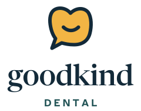
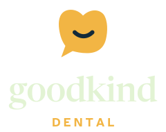

About the concept
An original practice concept. A working website.
This project explores how useful content, a recognizable brand and clear handoffs can support a dental journey for people who have been putting it off.
The brief
Adults postponing routine care, people with a dental concern and patients researching elective smile treatment. Offers and smile photography can overshadow treatment choices, anxiety and the total cost.
The reference
MINT dentistry informed the research direction: connect local discovery and preventive care with a clearly explained elective treatment journey. The page structure follows the warm, plain layout of a preventive-health site (photo hero, three steps, an honest cost card), with none of its name, marks or copy. The reference organizations did not commission, endorse or participate in this project.
What is built
Treatment pages, a comfort menu that makes a downloadable comfort card, a line-by-line written plan explainer, pocket guides, four local social profiles, a sample visit planner, a clinic owner view with notes, and an illustrative handoff model. Brand identity, copy, illustrations and photography were created or sourced for this portfolio demonstration.
What is not claimed
No operating clinic, real providers, patient research interviews, clinical review, system integration, live campaign or measured business result. Locations, their addresses, parking, access and hours, and the visual scenes are fictional. Portraits are models. Any real launch would require verified operational content and appropriate professional review, including clinical sign-off on the urgent-care wording.
Brand system
A neighborhood practice, not a hospital.
The logo is a soft tooth that is also a speech bubble: talk first. Every file is in the brand folder as an SVG.




Palette
- Mint ground
#E2F3D3Every page background. - Mint card
#D1EABFFilled cards, one shade darker than the ground. No borders. - Deep mint
#BFDFAAAlternate bands and the band behind the footer card. - Navy ink
#132A39Type, the footer card, primary buttons. - Teal
#245557Links, labels, secondary text accents. - Honey
#F2B544Highlights, the italic accent underline, stickers. Navy text only. - Soft honey
#FBE3A6The urgent strip and announcement bar. - Urgent red
#B3261EThe 911 line marker only. White text only. - White
#FFFFFFThe comfort card, the cost card, the ticket.
Contrast pairs used for text (WCAG 2.1): Navy ink on mint ground 12.7:1 · Navy ink on mint card 11.4:1 · Navy ink on deep mint 10.1:1 · Teal on mint ground 7.2:1 · Teal on mint card 6.5:1 · Navy ink on honey 8.1:1 · Navy ink on soft honey 11.7:1 · Mint ground on navy ink 12.7:1 · Honey on navy ink 8.1:1 · White on urgent red 6.5:1.
Type
- Hero 68px / 1.02
- Dentistry that goes at your pace.
- H2 44px / 1.08
- Dentistry that goes at your pace.
- H3 24px / 1.2
- Dentistry that goes at your pace.
- Body 18px / 1.6
- The dentist checks your gums and tells you what they see.
- Label 12px
- STEP 1 · SAMPLE
Voice
- Start from today, not from the gap.Do: “Coming back after a while? Start with a talk.”Don’t: “It’s been too long! Book your overdue check-up.”
- Say what happens before it happens.Do: “The dentist checks your gums and tells you what they see.”Don’t: “Comprehensive periodontal evaluation.”
- Put cost on paper, never in a promise.Do: “You’ll see the estimate in writing before any work.”Don’t: “Affordable smiles for everyone.”
Persona
Maya, 34
UX researcher. Hasn’t seen a dentist in seven years, since a painful filling. A molar aches with cold drinks and she’s embarrassed about the gap.
Wants
- To talk before anyone touches her teeth
- To see the price before agreeing
- To stop at any point
- No lecture
Worries
Pain · Judgement · Surprise bills · Being talked into treatment
Icons and photography
Icons: one set, 3px rounded strokes in navy on a 64 grid, filled with honey, mint or sky. Photography: warm daylight, models only, no drills or open-mouth close-ups. Each photo is cropped to its slot; credits are listed below.
Image credits
14 photographs: 3 free-licence stock photos (Unsplash and Pexels) for places and details, and 11 images generated with Canva for people, so the persona looks like the same person throughout. Everyone shown is an illustrative model. Nobody is a real patient, and no photo shows a real member of staff.
heroAI-generated with Canva. An illustrative model, not a real person, patient or clinician.talk-uprightAI-generated with Canva. An illustrative model, not a real person, patient or clinician.headphones-blanketAI-generated with Canva. An illustrative model, not a real person, patient or clinician.comfort-kitPhoto by Marie G. on Unsplash (Unsplash License).man-laughingAI-generated with Canva. An illustrative model, not a real person, patient or clinician.natural-smileAI-generated with Canva. An illustrative model, not a real person, patient or clinician.tablet-planAI-generated with Canva. An illustrative model, not a real person, patient or clinician.front-deskAI-generated with Canva. An illustrative model, not a real person, patient or clinician.mug-receptionPhoto by Marie G. on Unsplash (Unsplash License).street-frontPhoto by Lesli Whitecotton on Pexels (Pexels License).parent-teenAI-generated with Canva. An illustrative model, not a real person, patient or clinician.role-dentistAI-generated with Canva. An illustrative model, not a real person, patient or clinician.role-coordinatorAI-generated with Canva. An illustrative model, not a real person, patient or clinician.role-front-deskAI-generated with Canva. An illustrative model, not a real person, patient or clinician.